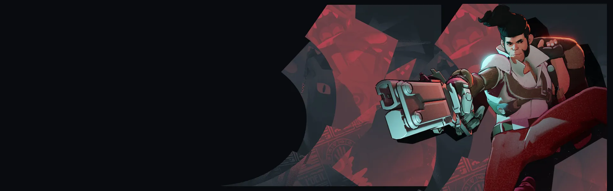

Cortar e Picar Slice and Dice Avança ferindo inimigos pelo caminho e reduzindo a resistência espiritual deles. Sangramento Bloodletting Recebe só parte do dano imediatamente e adia o resto ao longo do tempo; pode ser ativada para limpar parte do dano adiado. Golpe Fatal Killing Blow Salta contra o primeiro herói inimigo e o executa se estiver abaixo do limite de vida; senão, o fere.Duelista que cresce conforme acumula acertos.
História
Membro leal da "The Baxter Society", uma ordem internacional de caçadores de monstros, Shiv viaja pela América do Norte em busca de abater criaturas que atacam os vivos.
Embora a sua natureza menos polida e o seu passado criminoso tornem alguns dos membros mais tradicionais da Sociedade cautelosos, ninguém pode negar a sua eficácia.
História oficial do jogo, traduzida automaticamente para o português.
Números reais
Habilidades
Lança uma faca que faz o inimigo sangrar; cada acerto extra acumula e renova o sangramento.
Avança ferindo inimigos pelo caminho e reduzindo a resistência espiritual deles.
Recebe só parte do dano imediatamente e adia o resto ao longo do tempo; pode ser ativada para limpar parte do dano adiado.
Salta contra o primeiro herói inimigo e o executa se estiver abaixo do limite de vida; senão, o fere.
Builds mais usadas
11.096 partidas registradas com esta build.
Tiro Restaurador (800) · Perto (800) · Triturador resistente a balas (1.600) · Colete de Batalha (1.600) · Regeneração Mística (800) · Regeneração Radiante (3.200) · Aura do Caçador (3.200) · Dissipar Magia (3.200) · Healbane (1.600) · Refutação (800)
9.633 partidas registradas com esta build.
Regeneração Extra (800) · Taxa Extra (800) · Regeneração Mística (800) · Frente Fria (1.600) · Regeneração Radiante (3.200) · Healbane (1.600) · Emblema do Encantador (1.600) · Colete de Batalha (1.600) · Decadência (3.200) · Recarga rápida (3.200)
7.483 partidas registradas com esta build.
Rodadas Monstruosas (800) · Regeneração Extra (800) · Taxa Extra (800) · Regeneração Mística (800) · Golpe Espiritual (800) · Regeneração Radiante (3.200) · Healbane (1.600) · Emblema do Encantador (1.600) · Impulsionador de cura (1.600) · Colecionador de Troféus (1.600)
Confrontos reais
 Mirage — 50.2% de vitória
Mirage — 50.2% de vitória Pocket — 49.5% de vitória
Pocket — 49.5% de vitória Sinclair — 49.3% de vitória
Sinclair — 49.3% de vitória Viscous — 48.8% de vitória
Viscous — 48.8% de vitória Deadman Danny — 48.6% de vitória
Deadman Danny — 48.6% de vitória Solomon — 48.6% de vitória
Solomon — 48.6% de vitória
 Graves — 36.5% de vitória
Graves — 36.5% de vitória Paige — 37.5% de vitória
Paige — 37.5% de vitória Seven — 39.3% de vitória
Seven — 39.3% de vitória Haze — 39.5% de vitória
Haze — 39.5% de vitória Kelvin — 40.4% de vitória
Kelvin — 40.4% de vitória Rat King — 40.4% de vitória
Rat King — 40.4% de vitória
Ver a página de counters do Shiv
O que upar primeiro
Nível por nível, na ordem que os jogadores mais usam em partidas de verdade. A porcentagem mostra quantos escolheram aquela habilidade naquele nível.
Melhores duplas
Heróis que mais ganham jogando junto com ele, em partidas reais (pelo menos 1.500 partidas juntos).
- Rat King54,4%
- Paige51,5%
- Graves51,3%
 Victor49,7%
Victor49,7%- Seven49,4%
- Mirage36,5%
 Warden39,3%
Warden39,3% The Doorman39,5%
The Doorman39,5%
Rota (lane)
Na rota, cada lado joga em dupla. Estes números são de confrontos reais: a diferença de almas é medida com o jogo já começado, então almas no verde significa que ele costuma estar na frente.
- Graves — 36,3% de vitória −194 almas (727 partidas)
- Paige — 36,9% de vitória −74 almas (1.185 partidas)
- Seven — 38,8% de vitória +251 almas (330 partidas)
- Haze — 39,7% de vitória −584 almas (1.608 partidas)
 Wraith — 40,0% de vitória −422 almas (538 partidas)
Wraith — 40,0% de vitória −422 almas (538 partidas)- Rat King — 41,0% de vitória −220 almas (9.774 partidas)
 Lash — 42,3% de vitória −188 almas (1.610 partidas)
Lash — 42,3% de vitória −188 almas (1.610 partidas) Baba — 42,6% de vitória −61 almas (2.170 partidas)
Baba — 42,6% de vitória −61 almas (2.170 partidas)
 Lady Geist — 51,4% de vitória −100 almas (243 partidas)
Lady Geist — 51,4% de vitória −100 almas (243 partidas) Rem — 49,7% de vitória −546 almas (569 partidas)
Rem — 49,7% de vitória −546 almas (569 partidas) Billy — 48,5% de vitória +336 almas (478 partidas)
Billy — 48,5% de vitória +336 almas (478 partidas)
Histórico de win rate
14/09: 46.6% → 02/11: 47.0% → 21/12: 45.9% → 08/02: 44.4% → 29/03: 46.3% → 17/05: 47.1% → 05/07: 49.0% → 23/08: 47.3% → 11/10: 44.4%